정보처리산업기사 (2012-03-04 기출문제)
1과목: 데이터 베이스
1. 결정자가 후보 키가 아닌 함수 종속을 제거하는 정규화 단계는?
- 비정규 릴레이션 → 1NF
- 1NF → 2NF
- 2NF → 3NF
- 3NF → BCNF
(정답률: 65%)

2. 해싱에 대한 다음 설명의 ( ) 안 내용으로 옳은 것은?
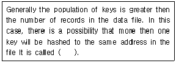
- collision
- slot
- bucket
- key
(정답률: 69%)
3. 비선형 구조에 해당하는 자료 구조 모두를 옳게 나열한 것은?
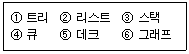
- ②, ③, ④, ⑤
- ①, ③, ⑥
- ①, ④, ⑥
- ①, ⑥
(정답률: 82%)
4. 후위 표기법으로 표현된 다음 수식을 중위 표기법으로 옳게 나타낸 것은?
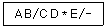
- C/D-(A*B)/E
- C/E-(A*B)/D
- B/A-(C-D)/E
- A/B-(C*D)/E
(정답률: 83%)
5. 뷰(VIEW)의 특징으로 옳지 않은 것은?
- 뷰에 대한 검색 연산은 기본 테이블 검색 연산과 비교하여 제약이 따른다.
- DBA는 보안 측면에서 뷰를 활용할 수 있다.
- 뷰 위에 또 다른 뷰를 정의할 수 있다.
- 뷰는 하나 이상의 기본 테이블로부터 유도되어 만들어지는 가상 테이블이다.
(정답률: 67%)
6. 다음 SQL 문에서 DISTINCT의 의미는?
- 검색결과에서 레코드 중복을 제거하라.
- 모든 레코드를 검색하라.
- 검색결과를 순서대로 정렬하라.
- DEPT의 처음 레코드만 검색하라.
(정답률: 85%)
7. DBMS에 대한 설명으로 틀린 것은?
- 데이터의 중복을 최소화하여 기억 공간을 절약할 수 있다.
- 다수의 사용자들이 서로 다른 목적으로 데이터를 공유하는 것이 가능하다.
- 데이터베이스의 구축비용 및 시스템 운영비용이 감소한다.
- 정확한 최신 정보의 이용이 가능하고 정확한 데이터가 저장되어 있음을 보장하는 무결성이 유지된다.
(정답률: 72%)
8. 다음 설명이 의미하는 것은?
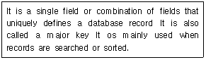
- Foreign key
- Alternative key
- Primary
- Reference key
(정답률: 64%)
9. 데이터베이스 설계 단계 중 물리적 설계 단계와 거리가 먼 것은?
- 저장 레코드 양식 설계
- 레코드 집중의 분석 및 설계
- 트랜잭션 모델링
- 접근 경로 설계
(정답률: 76%)
10. 다음 그림에서 트리의 차수(Degree of a Tree)는?
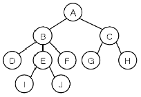
- 3
- 4
- 5
- 10
(정답률: 82%)
11. 트랜잭션의 특성에 해당하지 않는 것은?
- DURABILITY
- CONSISTENCY
- ATOMICITY
- INTEGRITY
(정답률: 60%)
12. 다음 자료에 대하여 버블 정렬을 이용하여 오름차순으로 정렬할 경우 1회전 후의 결과는?
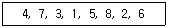
- 4, 7, 3, 1, 5, 2, 6, 8
- 1, 7, 3, 4, 5, 8, 2, 6
- 1, 4, 7, 3, 5, 8, 2, 6
- 4, 3, 1, 5, 7, 2, 6, 8
(정답률: 71%)
13. 관계 대수의 JOIN 연산자 기호는?
- +
- π
- ∩
(정답률: 75%)
14. 데이터베이스의 정의 중 최소의 중복 또는 통제된 중복과 관계되는 것은?
- 통합 데이터
- 공용 데이터
- 저장 데이터
- 운영 데이터
(정답률: 60%)
15. 릴레이션에서 속성의 수와 튜플의 수를 의미하는 것으로 순서대로 옳게 짝지어진 것은?
- CARDINALITY, DEGREE
- DOMAIN, DEGREE
- DEGREE, CARDINALITY
- DEGREE, DOMAIN
(정답률: 74%)
16. 동일 조인의 결과 릴레이션에서 중복되는 조인 애트리뷰트를 제거하는 연산은?
- Union Join
- Intersect Join
- Natural Join
- Difference Join
(정답률: 51%)
17. 개체-관계(E-R) 모델에 대한 설명으로 틀린 것은?
- E-R 다이어그램은 개체 타입을 사각형, 관계 타입을 다이아몬드, 속성을 화살표로 표현한다.
- 개체 타입과 이들 간의 관계 타입을 이용해서 현실 세계를 개념적으로 표현하는 방법이다.
- 1976년 P. Chen 이 제안한 것이다.
- E-R 모델의 기본적인 아이디어를 시각적으로 가장 잘 나타낸 것이 E-R 다이어그램이다.
(정답률: 77%)
18. 데이터 모델을 다음과 같이 정의할 때 “C” 가 의미하는 것은?
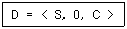
- CONSISTENCY
- CONSTRAINT
- CONTROL
- CONDITION
(정답률: 61%)
19. 정보(Information)의 의미로 거리가 먼 것은?
- 자료(data)를 처리하여 얻은 결과
- 사용자가 목적하는 값
- 현실 세계에서 관찰을 통해 얻은 값
- 의사결정을 위한 값
(정답률: 69%)
20. 해싱 함수에서 키(key)를 여러 부분으로 나누고 각 부분의 값 또는 보수 값을 모두 더하여 홈 주소를 얻는 기법은?
- Division 법
- Folding 법
- Digital Analysis 법
- Radix 법
(정답률: 59%)
2과목: 전자 계산기 구조
21. 반가산기에서 합(sum)의 논리식은?
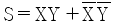
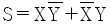
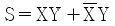
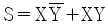
(정답률: 72%)
22. 메모리의 내용을 레지스터에 전달하는 기능은?
- load
- fetch
- transfer
- store
(정답률: 57%)
23. CPU가 데이터를 처리하는데 반드시 거쳐야 하는 레지스터는?
- MAR
- 누산기
- MBR
- IXR
(정답률: 51%)
24. Shift register에 있는 binary number가 여섯(6)번 Shift-left 되었을 때의 값은? (단, Shift register는 충분히 크다고 가정한다.)
- number × 6
- number - 6
- number × 64
- number ÷ 64
(정답률: 62%)
25. DASD(Direct Access Storage Device)에 해당하는 것은?
- 자기코어
- 자기테이프
- 자기디스크
- 자기카세트
(정답률: 55%)
26. enable 또는 disable 단자에 의하여 데이터의 전송 방향을 하드웨어적으로 제어하는데 사용하는 소자는?
- multiplexer
- tri-state buffer
- decoder
- SRAM
(정답률: 39%)
27. 순서논리회로에 해당하는 것은?
- 인코더
- 가산기
- 카운터
- 멀티플랙서
(정답률: 54%)
28. 다음과 같이 세 개의 마이크로 동작(micro operation)이 이루어 졌을 경우에 이 동작이 끝났을 때 A 레지스터 상태는?
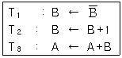
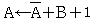
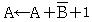
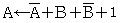
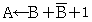
(정답률: 61%)
29. 서브루틴과 연관되어 사용되는 명령은?
- Shift
- Call과 Return
- Skip과 Jump
- Increment와 Decrement
(정답률: 64%)
30. 주소 선의 수가 12개이고 데이터 선의 수가 8개인 ROM의 내부 조작을 나타 내는 것은?
- 2K × 8
- 3K × 8
- 4K × 8
- 12K × 8
(정답률: 49%)
31. CAM(Content Addressable Memory)에 대한 설명 중 가장 옳지 않은 것은?
- 구성 요소로서 마스크 레지스터, 검색 자료 레지스터 등이 있다.
- 내용에 의하여 액세스 되는 메모리 장치이다.
- 데이터를 직렬 탐색하기에 알맞도록 되어 있다.
- 주소를 사용하지 않고 기억된 정보의 일부분을 이용하여 자료를 신속히 찾을 수 있다.
(정답률: 51%)
32. 다음 16진수의 연산 값은?
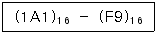
- FA
- D1
- A8
- 5E
(정답률: 66%)
33. 인터럽트가 발생하면 프로세서의 상태보존이 필요한데 그 이유는?
- 인터럽트를 요청한 해당 장치에 대한 인터럽트 서비스를 완료하고 원래 수행 중이던 프로그램으로 복귀하기 위해
- 인터럽트 처리 속도를 향상시키기 위해
- 인터럽트 발행 횟수를 카운트하고 일정 횟수 이상이 되면 시스템을 정지시키기 위해
- 인터럽트 요청 장치와 그 장치의 우선순위를 파악하기 위해
(정답률: 77%)
34. 다음 중 자기보수 코드(self complement code)인 것은?
- Alphameric code
- 2421 code
- 5421 code
- 8421 code
(정답률: 49%)
35. 데이지 체인(Daisy Chain) 방식과 폴링(Polling) 방식의 설명으로 옳지 않은 것은?
- 폴링 방식은 소프트웨어 방식이다.
- 데이지 체인 방식은 하드웨어 방식이다.
- 데이지 체인 방식이 폴링 방식보다 속도가 빠르다.
- 폴링 방식이 데이지 체인 방식보다 속도가 빠르다.
(정답률: 61%)
36. 메이저 상태(Major State) 중 인스트럭션의 수행과는 상대적으로 무관한 것은?
- Fetch Major State
- Indirect Major State
- Execute Major State
- Interrupt Major State
(정답률: 50%)
37. 256워드×4비트의 구성을 갖는 메모리IC(집적회로)를 사용하여 4096워드×16비트 메모리를 구성하려고 한다. 몇 개의 IC가 필요한가?
- 16
- 32
- 64
- 128
(정답률: 52%)
38. 다음 10진수 0.625를 2진수로 변환한 것은?
- 0.101
- 0.0011
- 0.1111
- 0.110
(정답률: 61%)
39. 다음 중 이항(binary) 연산자는 어떤 것인가?
- complement
- shift
- AND
- rotate
(정답률: 67%)
40. 부프로그램(Sub-program)에서 주프로그램(Main-program)으로 복귀할 때 필요한 주소를 기억할 때 적합한 것은?
- Queue
- Dequeue
- Stack
- Buffer
(정답률: 66%)
3과목: 시스템분석설계
41. 생명주기 종류 중 폭포수 모델의 특징이 아닌 것은?
- 단계별 정의가 분명하다.
- 선형 순차적 모형이다.
- 모형(prototype)을 만들어 의사소통의 도구로 삼으면서 개발한다.
- 두 개 이상의 과정이 병행하여 수행되지 않는다.
(정답률: 64%)
42. 다음 설명에 해당하는 출력 매체는?
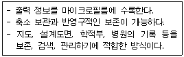
- 음성 출력 시스템
- 파일 출력 시스템
- 인쇄 출력 시스템
- COM 시스템
(정답률: 71%)
43. 흐름도의 종류 중 컴퓨터로 처리하는 부분을 중심으로 자료 처리에 필요한 모든 조작을 표시하고, 컴퓨터에 의한 처리 내용 및 조건, 입출력 데이터의 종류와 출력 등을 컴퓨터의 기능에 맞게 논리적으로 정확하게 나타내어야 하는 것은?
- 블록 차트
- 시스템 흐름도
- 프로세스 흐름도
- 프로그램 흐름도
(정답률: 40%)
44. 시스템의 평가 항목 중 시스템 전체의 가동률, 시스템을 구성하고 있는 각 요소의 신뢰도, 신뢰성 향상을 위해 시행한 처리의 경제적 효과를 검토하는 것은?
- 기능 평가
- 신뢰성 평가
- 성능 평가
- 가격 평가
(정답률: 68%)
45. 일시적인 성격을 지닌 정보를 기록하는 파일로 마스터 파일을 갱신 또는 조회하기 위해 작성하는 파일은?
- Transaction file
- Source file
- History file
- Trailer File
(정답률: 59%)
46. 다음과 같은 방법으로 부여하는 코드는?
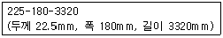
- 표의 숫자 코드
- 블록 코드
- 순차 코드
- 그룹 분류 코드
(정답률: 68%)
47. 어느 특정의 조건을 주어진 파일 중에서 그 조건을 만족하는 것과 만족하지 않는 것으로 분리 처리하는 표준 처리 패턴은?
- Collate
- Distribution
- Merge
- Conversion
(정답률: 64%)
48. 입력 설계 순서로 옳은 것은?
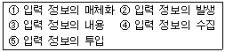
- ①→②→③→④→⑤
- ⑤→④→③→②→①
- ②→④→①→⑤→③
- ①→②→③→⑤→④
(정답률: 76%)
49. 파일 설계 단계 중 항목 명칭, 항목 속성, 키 항목, 항목 배열 순서, 전송 블록 크기, 정보량 등과 관계되는 것은?
- 파일 매체 검토
- 파일 특성 조사
- 파일 편성법 검토
- 파일 항목 검토
(정답률: 64%)
50. 프로세스 설계 순서로 옳은 것은?
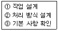
- ① → ② → ③
- ② → ① → ③
- ③ → ② → ①
- ③ → ① → ②
(정답률: 58%)
51. 해싱 함수 선택시 고려사항이 아닌 것은?
- Collision의 최대화
- Overflow의 최소화
- 버킷의 크기
- 키 변환 속도
(정답률: 62%)
52. 소프트웨어 위기현상의 원인으로 볼 수 없는 것은?
- 소프트웨어의 발전 속도에 비해서 하드웨어의 개발 속도가 현저히 늦음
- 소프트웨어 개발 계획에서 수립한 개발 비용의 초과 및 개발기간의 지연
- 개발 인력의 부족과 그로 인한 인건비 상승
- 성능 및 신뢰성 부족
(정답률: 65%)
53. 시스템의 기본 요소 중 입력된 자료로 올바른 결과를 얻을 수 있도록 감시, 관리하는 행위의 기능을 의미하는 것은?
- control
- process
- output
- feedback
(정답률: 66%)
54. 자료사전에 사용되는 기호 설명으로 옳지 않은 것은?
- + : 자료의 연결
- @ : 자료의 주석
- { } : 자료의 반복
- [ ] : 자료의 선택
(정답률: 67%)
55. 객체지향 기법에서 2개 이상의 유사한 객체들을 묶어서 하나의 공통된 특성을 표현하는 것은?
- 클래스
- 메시지
- 인스턴스
- 메소드
(정답률: 65%)
56. 시스템 평가에서 처리 시간의 견적 방법 중 처리 시간을 계산할 수 있는 응용 프로그램을 이용하는 방법으로 파일 종류와 수량, 처리 순서, 기기 구성 등을 매개변수 형식으로 입력해주면 각 작업에 대한 소요 시간 및 월 소요시간 등이 자동으로 계산되는 것은?
- 입력에 의한 계산 방법
- 추정에 의한 계산 방법
- 컴퓨터에 의한 계산 방법
- 출력에 의한 계산 방법
(정답률: 43%)
57. 입력 설계 단계 중 수집 담당자, 수집 방법과 경로, 수집 주기와 시기, 수집시의 오류 검사 방법과 관계되는 것은?
- 입력 정보 매체화 설계
- 입력 정보 투입 설계
- 입력 정보 내용 설계
- 입력 정보 수집 설계
(정답률: 72%)
58. 코드 오류 체크의 종류 중 컴퓨터를 이용하여 데이터를 처리하기 전에 입력 자료의 내용을 체크하는 방법으로 사전에 주어진 체크 프로그램에 의해서 정량적인 데이터가 미리 정해 놓은 규정된 범위(상한값, 하한값) 내에 존재 하는가를 체크하는 것은?
- Mode Check
- Limit Check
- Format Check
- Block Check
(정답률: 77%)
59. 시스템의 특성 중 다음 설명에 해당하는 것은?
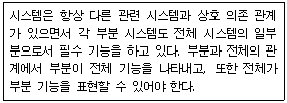
- 제어성
- 자동성
- 종합성
- 목적성
(정답률: 74%)
60. 코드 설계 단계 중 코드 체계의 결정, 체크 디지트의 사용 여부 결정, 코드 자릿수 결정, 코드 부여 요령 등의 결정 단계는?
- 코드화 방식 결정
- 코드 대상의 특성 분석
- 사용 범위의 결정
- 코드 목적의 명확화
(정답률: 65%)
4과목: 운영체제
61. 프로세스의 정의로 거리가 먼 것은?
- 동기적 행위를 일으키는 주체
- 실행 중인 프로그램
- 프로시저가 활동 중인 것
- 프로세스 제어 블록의 존재로서 명시되는 것
(정답률: 65%)
62. 은행원 알고리즘과 연계되는 교착상태 해결 기법은?
- Avoidance
- Prevention
- Detection
- Recovery
(정답률: 67%)
63. 다음 설명에 해당하는 디렉토리 구조는?
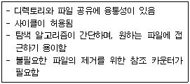
- 1단계 디렉토리 구조
- 2단계 디렉토리 구조
- 일반적인 그래프 디렉토리 구조
- 트리 디렉토리 구조
(정답률: 54%)
64. UNIX 파일 시스템 구조에서 파일의 크기 및 파일 링크 수를 확인할 수 있는 곳은?
- I-node 블록
- 부트 블록
- 데이터 블록
- 슈퍼 블록
(정답률: 59%)
65. Master/Slave(주/종) 처리기에 대한 설명으로 옳지 않은 것은?
- 종프로세서는 입, 출력 발생시 주프로세서에게 서비스를 요청한다.
- 주프로세서는 운영체제를 수행한다.
- 주프로세서가 고장 나면 전체 시스템이 다운된다.
- 종프로세서는 입, 출력과 연산을 담당한다.
(정답률: 65%)
66. 사용자가 로그인할 때 사용자 인증을 위해 신원을 확인하는 방법으로 적당하지 못한 것은?
- Enter 키 누름
- 지문인식장치 사용
- 패스워드 입력
- 보안카드 사용
(정답률: 80%)
67. 운영체제의 목적으로 거리가 먼 것은?
- 컴퓨터와 사용자 간의 인터페이스 제공
- 자원 스케줄링 및 효율적 운영
- 신뢰도 향상 및 반환 시간 증가
- 주변장치 관리
(정답률: 61%)
68. 스풀링과 버퍼링에 관한 설명으로 틀린 것은?
- 버퍼링은 디스크를 큰 버퍼처럼 사용한다.
- 버퍼링은 CPU의 효율적인 시간 관리를 지향하기 위하여 도입되었다.
- 스풀링은 여러 작업에 대한 입출력과 계산을 동시에 수행한다.
- 스풀링은 시스템의 효율을 높일 수 있는 방향으로 다음에 수행할 작업의 선택에 관한 스케줄링을 가능하게 해 준다.
(정답률: 42%)
69. 운영체제의 운용 기법 중 시분할 체제에 대한 설명으로 옳지 않은 것은?
- 일괄 처리 형태에서의 사용자 대기 시간을 줄이기 위한 대화식 처리 형태이다.
- 여러 사용자가 CPU를 공유하고 있지만 마치 자신만이 독점하여 사용하고 있는 것처럼 느끼게 된다.
- 좋은 응답 시간을 제공하기 위해 각 사용자들에게 일정 CPU시간만큼을 차례로 할당하는 SJF 스케줄링을 사용한다.
- 단위 작업 시간을 Time Slice 라고 한다.
(정답률: 55%)
70. UNIX의 특징이 아닌 것은?
- Multi-User, Multi-Tasking 지원
- 대화식 운영체제
- 높은 이식성
- 2단계 디렉토리 구조
(정답률: 69%)
71. 다음 프로세스에 대하여 HRN 기법으로 스케줄링 할 경우 우선순위로 옳은 것은?
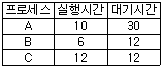
- A → B → C
- B → C → A
- A → C → B
- B → A → C
(정답률: 62%)
72. 13K의 작업을 다음 그림의 14K 공백의 작업공간에 할당 했을 경우 사용된 기억장치 배치전략 기법은?
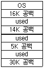
- Last fit
- Best fit
- First fit
- Worst fit
(정답률: 78%)
73. 모니터에 대한 설명으로 틀린 것은?
- 자료 추상화와 정보 은패 개념을 기초로 한다.
- 병행 다중 프로그래밍에서 상호 배제를 구현하기 위한 특수 프로그램 기법이다.
- 구조적인 면에서 공유 데이터와 이 데이터를 처리하는 프로시저의 집합이라 할 수 있다.
- 모니터 외부의 프로세스도 모니터 내부 데이터를 직접 액세스 할 수 있다.
(정답률: 58%)
74. 프로세스별로 보호 대상과 권한의 목록을 유지하는 것으로 접근행렬을 행의 내용을 하나의 리스트로 묶어서 구성하는 자원 보호 기법은?
- Lock Key
- Access Control Matrix
- Access Control List
- Capability list
(정답률: 43%)
75. PCB에 대한 설명으로 틀린 것은?
- 각각의 프로세스는 모두 PCB를 갖고 있다.
- PCB를 위한 공간은 시스템이 최대 수용할 수 있는 프로세스의 수를 기본으로 하여 동작으로 공간을 할당하게 된다.
- 프로세스의 중요한 상태 정보를 갖고 있다.
- 프로세스가 소멸되어도 해당 PCB는 제거되지 않는다.
(정답률: 71%)
76. 3페이지가 들어갈 수 있는 기억 장치에서 다음과 같은 순서로 페이지가 참조 될 때 LRU 기법을 사용하면 최종적으로 기억 공간에 남는 페이지는?(단, 현재 기억 장치는 모두 비어 있다고 가정한다.)
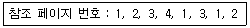
- 2, 1, 3
- 1, 2, 4
- 2, 3, 4
- 1, 3, 4
(정답률: 51%)
77. 스레드에 대한 설명으로 틀린 것은?
- 프로세스 내부에 포함되는 스레드는 공통적으로 접근 가능한 기억 장치를 통해 효율적으로 통신한다.
- 스레드란 프로세스보다 더 작은 단위를 말하며, 다중 프로그래밍을 지원하는 시스템 하에서 CPU에게 보내져 실행되는 또 다른 단위를 의미한다.
- 프로세스가 여러 개의 스레드들로 구성되어 있을 때, 하나의 프로세스를 구성하고 있는 여러 스레드들은 모두 공통적인 제어 흐름을 갖는다.
- 상태의 절감은 하나의 연관된 스레드 집단이 기억장치나 파일과 같은 자원을 공유함으로써 이루어진다.
(정답률: 53%)
78. 분산 운영체제에서 각 노드들이 point-to-point 형태로 중앙 컴퓨터에 연결되고 중앙 컴퓨터를 경유하여 통신하는 위상(Topology)구조는?
- 성형(Star) 구조
- 링(Ring) 구조
- 계층(Hierarchy) 구조
- 완전연결(Fully connection) 구조
(정답률: 73%)
79. 페이지 크기에 대한 설명으로 옳지 않은 것은?
- 페이지 크기가 클 경우 프로세스 수행에 불필요한 정보가 주기억장치에 적재될 확률이 커진다.
- 페이지 크기가 클 경우 페이지 맵 테이블의 크기가 작아진다.
- 페이지 크기가 작을 경우 전체적인 입·출력 시간이 감소된다.
- 페이지 크기가 작을 경우 전체 맵핑 속도가 늦어진다.
(정답률: 42%)
80. 다음 설명과 같은 현상이 의미하는 것은?
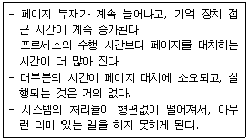
- Segmentation
- Locality
- Thrashing
- Monitor
(정답률: 68%)
5과목: 정보통신개론
81. 다중화(Multiplexing) 방식에 해당하지 않는 것은?
- FDM
- TDM
- WDM
- QDM
(정답률: 45%)
82. LAN의 특성에 대한 설명으로 틀린 것은?
- 음성, 데이터, 화상정보를 전송할 수 있다.
- LAN 프로토콜은 OSI 참조모델의 상위계층에 해당된다.
- 전송방식으로 베이스밴드와 브로드밴드 방식이 있다.
- 광케이블 및 동축케이블의 사용이 가능하다.
(정답률: 61%)
83. 반송파의 진폭과 위상을 동시에 변조하는 방식은?
- ASK
- PSK
- FSK
- QAM
(정답률: 65%)
84. 데이터 전송에서 오류 검출 기법에 해당하지 않는 것은?
- Parity Check
- Packet Check
- Block Sum Check
- Cyclic Redundancy Check
(정답률: 49%)
85. 프로토콜(Protocol)에 대한 설명으로 옳은 것은?
- 시스템 간 정확하고 효율적인 정보전송을 위한 일련의 절차나 규범의 집합이다.
- 아날로그 신호를 디지털 신호로 변환하는 방법이다.
- 자체적으로 오류를 정정하는 오류제어방식이다.
- 통신회선 및 채널 등의 정보를 운반하는 매체를 모델화 한 것이다.
(정답률: 63%)
86. 패킷교환방식에 대한 설명으로 틀린 것은?
- 교환기에서 패킷을 일시 저장 후 전송하는 축적교환 기술이다.
- 패킷처리 방식에 따라 데이터그램과 가상회선 방식이 있다.
- X.25는 패킷형단말기와 패킷망간의 접속 프로토콜이다.
- X.75는 패킷형단말과 PAD간의 접속 프로토콜이다.
(정답률: 51%)
87. HDLC에서 사용되는 프레임의 종류에 해당하지 않는 것은?
- 정보 프레임
- 감독 프레임
- 무번호 프레임
- 제어 프레임
(정답률: 30%)
88. 회선 제어 방식 중 주 스테이션이 특정한 부 스테이션에게 데이터를 전송하는 것은?
- Selection 방식
- Polling 방식
- Content 방식
- Trigger 방식
(정답률: 37%)
89. PCM(Pulse Code Modulation) 방식의 구성 절차로 옳은 것은?
- 양자화→부호화→표본화→복호화
- 표본화→양자화→부호화→복호화
- 표본화→부호화→양자화→복호화
- 양자화→표본화→복호화→부호화
(정답률: 73%)
90. 비동기 전송모드(ATM)에 관한 설명으로 옳지 않은 것은?
- ATM은 B-ISDN의 핵심 기술이다.
- Header는 5Byte, Payload는 48Byte이다.
- 정보는 셀(Cell) 단위로 나누어 전송된다.
- 저속 메시지 통신망에 적합하다.
(정답률: 56%)
91. OSI 7계층 중 종단 간 메시지 전달 서비스를 담당하는 계층은?
- Physical Layer
- Data Link Layer
- Network Layer
- Transport Layer
(정답률: 58%)
92. 전송속도가 9600[bps]인 데이터를 8진수 PSK로 변조하여 전송할 때 변조속도는 몇 [baud] 인가?
- 1600
- 2400
- 3200
- 4800
(정답률: 56%)
93. TCP/IP 프로토콜 구조에 해당하지 않는 것은?
- Network Access Layer
- Data Link Layer
- Physical Layer
- Transport Layer
(정답률: 28%)
94. LAN의 네트워크 토플로지의 종류에 속하지 않는 것은?
- 트리형
- 버스형
- 링형
- 교환형
(정답률: 67%)
95. LAN에서 데이터의 충돌을 막기 위해 송신 데이터가 없을 때에만 데이터를 송신하고, 다른 장비가 송신 중 일 때에는 송신을 중단하며 일정시간 간격을 두고 대기 하였다가 다시 송신하는 방식은?
- TOKEN BUS
- TOKEN RING
- CSMA/CD
- CDMA
(정답률: 63%)
96. LAN을 구성하는 매체로서 광섬유 케이블의 일반적인 특성에 대한 설명으로 틀린 것은?
- 광대역, 저 손실 및 잡음에 강하다.
- 동축케이블에 비해 감쇠 현상이 크다.
- 성형 및 링형의 형태에서도 사용이 가능하다.
- 전자기적인 전자파의 간섭이 없다.
(정답률: 61%)
97. 점대점 링크를 통하여 인터넷 접속에 사용되는 IETF의 표준 프로토콜은?
- SLIP
- LLC
- HDLC
- PPP
(정답률: 54%)
98. ARQ(Automatic Repeat Request) 방식에 해당하지 않는 것은?
- Stop and Wait ARQ
- Selective Repeat ARQ
- Receive Ready ARQ
- Go-back-N ARQ
(정답률: 58%)
99. 통신제어장치(CCU)의 기능에 대한 설명으로 옳지 않은 것은?
- 신호의 변환
- 문자의 조립 및 분해
- 회선감시 및 접속제어
- 전송제어
(정답률: 35%)
100. 통신 프로토콜의 기본 요소가 아닌 것은?
- Syntax
- Semantics
- Timing
- Message
(정답률: 58%)